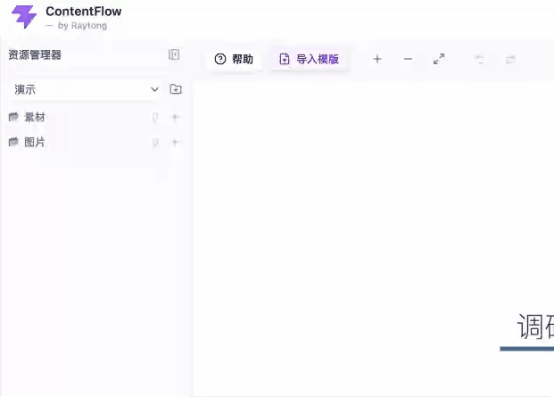

写报告、简历、方案时，多数人使用的 AI 工具依然是 Chatbot 形态——一切都发生在一条越来越长的对话里。这带来了三个绕不开的问题。
Chatbot 的界面本质是问答记录，而不是文档工作台。当用户想用它完成一份完整的文字内容时，会发现：素材没法被精准调用，AI 只能凭默认思路生成，润色和生成又全部堆在同一条对话里……越写越乱，越改越远。ContentFlow 正是为解决这些问题而生。
把参考资料一股脑丢进对话，AI 无法判断哪份材料对应哪一段内容；想让它精准使用某份素材，用户得反复解释「这段用文档 A、那段用文档 B」。
在思维导图上给每个章节节点绑定专属素材，父节点素材自动向后代继承。生成哪一章，就只用哪一章该用的素材，不再需要提示词里反复交代。
直接让 Chatbot「帮我写一份 XX」，它多半按照训练分布里的通用套路来。写作者心里的骨架、章节顺序、每一节要突出什么，全部无从表达。
上传一份心仪的参考稿（简历/周报/PRD/汇报……），AI 自动识别章节结构、搭好思维导图；也可以完全手写导图。总之——框架你说了算，AI 严格按你的骨架逐章节展开。
生成一段、润色一下、再改结构、再补细节……所有操作都堆在一条时间线上。想回头找某段修改后的内容，只能手动往上翻，效率极低。
参考 Claude Code 的交互思路：AI 对话生成或修改的内容，即时体现在文档主界面上，无需复制搬运。对话面板只保留任务记录，文档才是你真正的工作台。
从素材管理到骨架搭建，从章节生成到局部修改，六项核心能力覆盖文字创作全流程。
一个任务对应一个项目文件夹，素材、图片分类管理。拖拽上传，本地 IndexedDB 持久化，切换项目互不打扰。
可编辑的思维导图，Enter/Tab 快速增删节点，撤销重做齐全。导图即文档骨架，结构改动实时同步到文档标题。
点开任一节点，绑定专属素材、写下写作要求。父节点素材自动继承给子节点，AI 生成时按需精准取用。
根节点一键生成全文，父节点批量生成子章节，叶子节点单独出稿。最多 3 路并发，SSE 流式返回，等待时间大幅缩短。
在文档中选中一段原文 + 一句需求，AI 直接改写并覆盖选区，按问题类型给出结构化说明。修改前后一键切换，永远可回退。
上传参考模版（MD / DOC / DOCX / PDF），AI 自动识别章节结构、生成思维导图；可选择连同原文正文一起导入，作为写作起点。
每一步都能看到 AI 如何精准参与——不再是漫无目的的对话，而是围绕文档的协作。

手边有份心仪的参考稿？直接把它拖进"导入模版"——MD / DOC / DOCX / PDF 都行。AI 会识别里面的章节结构，一键生成思维导图；预览时还能增删改层级、重命名、选择是否连正文一起导入，确认后落到工作区。

把参考资料、案例、数据一次性上传到项目素材库，DOCX / PDF / TXT / MD 均可。首次使用时按需解析成文本并缓存，之后 AI 调用零延迟。素材可以直接拖到导图节点上完成绑定，也可以在节点小框里勾选。

点开任意节点弹出属性小框——绑定素材、写下写作要求、勾选是否引用已有内容都在同一张卡片上完成。父节点素材自动继承到全部后代并置灰，子节点无需重复选择。

从根节点、父节点或叶子节点发起生成，AI 会拆成独立章节任务。每章使用自己的写作要求、继承素材和上下文；结果精准写入对应章节，不会串位。

初稿之上，在文档中框选一段内容，AI 输入框上方会出现「选取原文」引用卡片。写下你的修改要求，AI 返回改写后的完整文本，直接覆盖选区——无需复制、无需搬运，参考了 Claude Code 的交互思路。
产品分四步走，一步一个脚印——先把非 AI 底盘打牢，再让 AI 会写、写得好，再整体提升用户使用体验。
先把"文档主界面 + 思维导图 + 项目资源"这套骨架打牢，作为后续所有 AI 能力的载体。
AI 生成能力（章节生成 + AI 对话）的完整落地与三向优化——产品从"能写"到"写得好"的关键跃迁。
切换到更快的 AI 底座 + 全链路优化，章节生成、对话回复都是边写边显示，几乎无等待感。
素材节点绑定 + 自动向后代继承；写入时按预设结构精确覆盖对应章节，AI 只写正文、不动骨架、不改标题。
AI 对话架构重构——意图识别能力提升，同一输入框讨论就回答、修改就动手，多轮对话不再翻车。
AI 能写之后，怎么让用户始终掌舵——防止误改、用起来更趁手。
让新手也能三步出稿：一句话描述目标 → AI 自动搭骨架 → 一键成文。想精细控制的人再手动调。